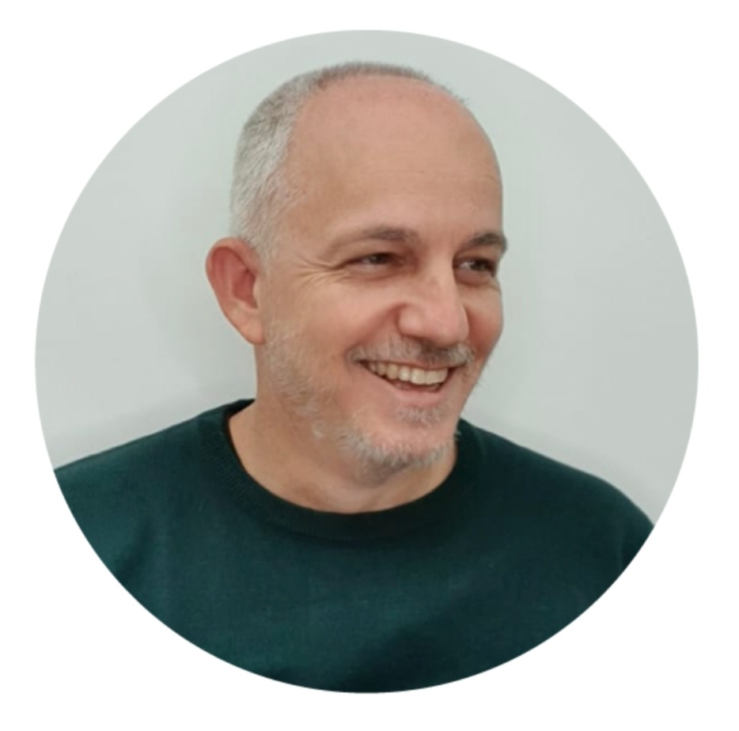
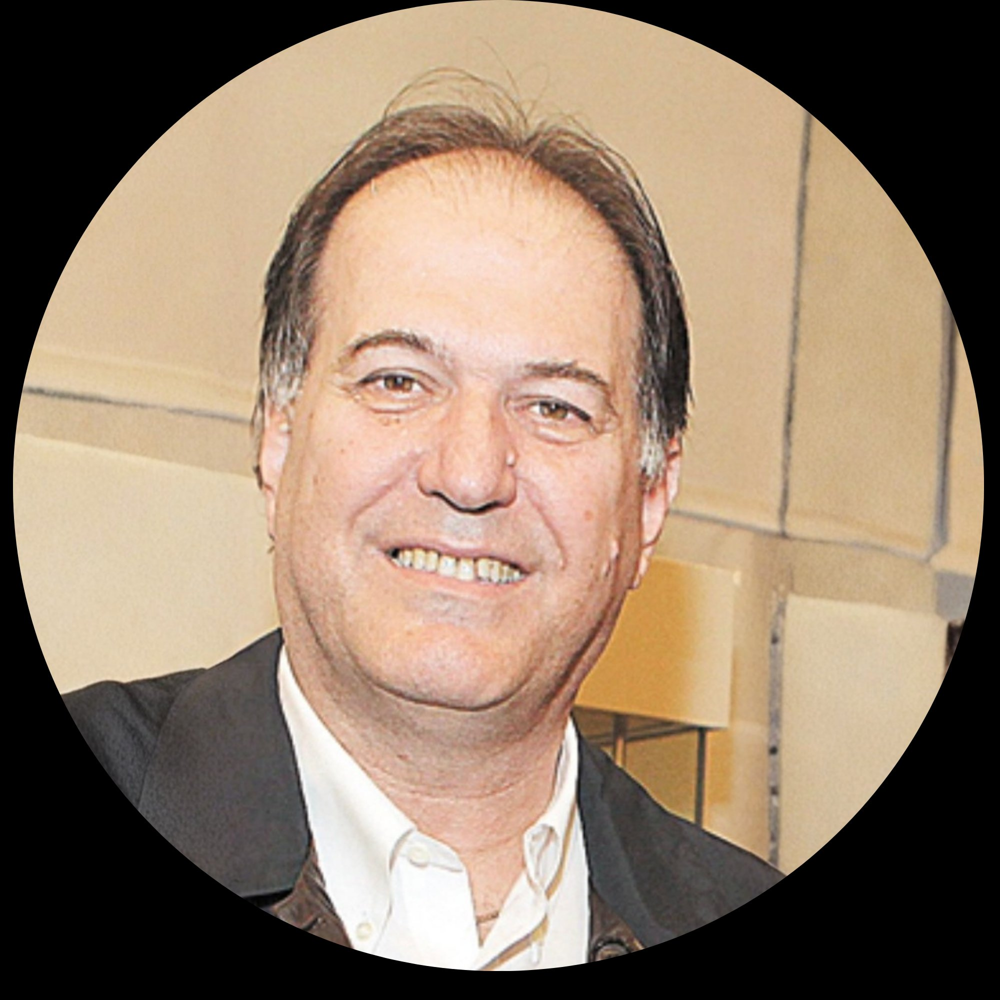
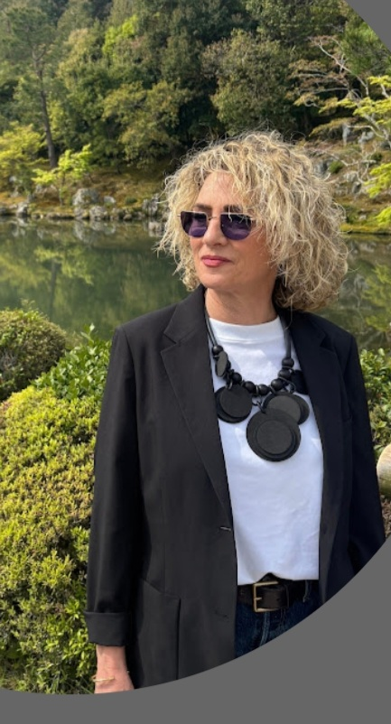
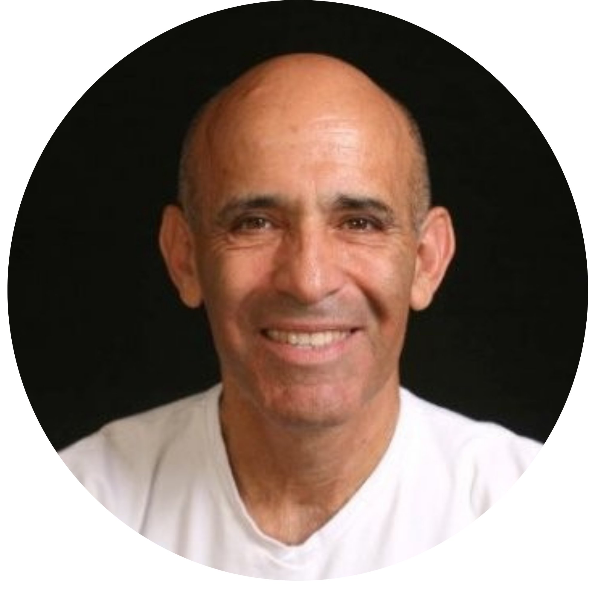
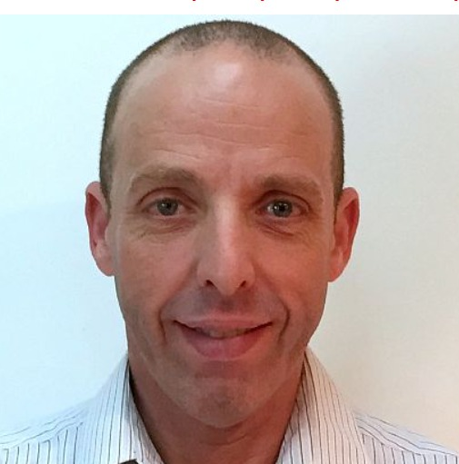

Dror Shaked
BizDev · Strategy · M&A
One of the most seasoned and recognized BizDev and strategy professionals in Israeli high-tech, known for his long tenure at Wix and his deep involvement in entrepreneurship, M&A, and the Israeli startup ecosystem.
Strongly identified with Wix from its earliest days, leading business development and M&A through the company's massive growth phase. His core expertise is Business Development + M&A — not a classic product person, but a man of connections, deals, partnerships, opportunity identification and strategic growth.
Known as a "connector" — bridging people, opening doors and matchmaking between industry players. Named by Geektime among Israel's top BizDev figures in 2014. Appears consistently at senior industry events alongside Israel's leading tech figures.
Active in entrepreneurship communities, university hubs, regional innovation centers and youth programs — with a strong orientation toward entrepreneurial education. Believes entrepreneurship is not a profession but a way of life.
Wix
BizDev
M&A
Ecosystem

Tal Sander
Global Operations · Scale · M&A
One of the most prominent executives to emerge from Keter Group, leading the transformation of Keter from an Israeli industrial company into a global powerhouse.
Led Keter through an aggressive growth phase across Europe and the US. Drove international acquisitions including Allibert (France) and EOS (Denmark). Under his leadership, Keter became one of the world's largest plastic and storage products companies, with dozens of factories and operations in over 40 countries.
Identified with building global manufacturing, distribution and logistics capabilities. Transitioned from CEO to Group President as part of a leadership restructuring, and later facilitated the billion-dollar sale of Keter to BC Partners private equity.
Key figures: $400M+ in sales, operations in 40+ countries, dozens of factories across Israel, Europe and the US.
Keter Group
Global Scale
Operations
M&A

Pazit Elhalal
Executive Search · Board Advisory
One of Israel's most established and recognized figures in Executive Search, specializing in CEO, SVP and board-level placements. Active in the field since the late 1980s.
Leads PRG Executive Search — a boutique firm specializing in identifying CEOs, CFOs, directors and chairpersons. Works with banks and financial institutions, public companies, holding groups, industry and manufacturing, insurance and capital markets, retail, real estate, government-owned companies and nonprofits.
Strongly identified with Board Advisory and Governance — building strong leadership teams and boards, not just "placement." Bank Hapoalim selected her to lead the search process for its new CEO.
Also engaged in leadership assessment, Succession Planning and building executive tables. Considered deeply connected to Israel's senior leadership tier — CEOs, chairpersons, directors and controlling shareholders.
Executive Search
Board Advisory
Leadership

Yaron Kislov
Retail · Service · Operations
A rare kind of person. Sharp. Precise.
Deputy CEO at Irooka retail chain. Deputy SVP Customer Service and Head of Front-Line Service at Partner Communications (formerly Orange). SVP at Castro fashion chain. SVP Service at El Al Airlines.
A rare combination of Retail + Service + Operations — three worlds that rarely meet in one person.
Former senior commander in the Israeli Air Force — helicopter pilot. Expert in performance analysis and operational research.
Retail
Service
Operations
IAF

Yaron Lavnat
Defense · Systems Engineering · Operations
Brigadier General (Ret.), IDF. Head of the Merkava & Armored Vehicles Program Directorate and Chief Engineer of the Merkava program. Director of Armor & AFV Systems Development. CEO of Takmar and Co-CEO of Plasan.
Managed working interfaces with Rafael, Elbit, IAI and other defense industries. Expert in complex national programs with vast experience managing thousands of interfaces and suppliers.
A deeply systemic, engineering-oriented figure — combining military discipline with technological thinking. Brings managerial stability, high reliability and the ability to execute massive programs.
"Be radical in technology, conservative in organization"
Merkava
Systems Eng.
Defense
IDF